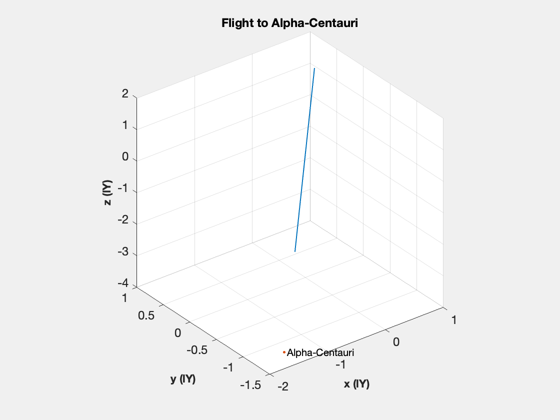

Simulate a mission to Alpha-Centauri.
The model includes the sun, earth, alpha centauri
------------------------------------------------------------------------- See also Constant, Date2JD, SunV1, RK4, RHSAlphaCentauriMission -------------------------------------------------------------------------
%-------------------------------------------------------------------------- % Copyright (c) 2011 Princeton Satellite Systems, Inc. % All Rights Reserved. %-------------------------------------------------------------------------- % Since version 10. %-------------------------------------------------------------------------- aU = Constant('au'); year = 365.25*86400; tEnd = 110*year; dT = 3*86400; % days c = Constant('speed of light'); lY = c*365.25*86400; n = ceil(tEnd/dT); d = struct; d.jD0 = Date2JD([2030 4 1 0 0 0]); % Initial location of Alpha-Centauri %----------------------------------- rA = HMS2Rad(14,39,36.4951); dec = DMS2Rad(-60,50,2.308); d.rAC = 4.3*lY*RaDec2U(rA,dec); d.aU = aU; d.rE = -SunV1(d.jD0)*aU; d.center = 1; u = RaDec2U(rA,dec); d.thrust = 50*u; d.mDry = 1000; d.uE = 2e7; d.muE = 3.98600436e5; d.muS = Constant('mu sun'); d.muA = 1.10*d.muS; d.muB = 0.93*d.muS; d.muP = d.muE; xP = zeros(8,n); % Initial conditions %------------------- x = []; x(1:3,1) = d.rE + 8000*u; x(4:6,1) = 50*u; x(7,1) = 8000; % Mass t = 0; h = waitbar(0,'Simulation Running'); for k = 1:n % Switch centers %--------------- if( d.center < 2 ) rMag = Mag(x); if( rMag/lY > 2.15 ) disp('Switching centers'); d.center = 2; x(1:3) = d.rAC - x(1:3); end end xP(:,k) = [x;d.center]; waitbar(k/n,h); x = RK4('RHSAlphaCentauriMission',x,dT,t,d); t = t + dT; end for k = 1:n if( xP(8,k) == 2 ) xP(1:3,k) = d.rAC - xP(1:3,k); end end NewFig('Alpha-Centauri Mission') plot3( xP(1,:)/lY, xP(2,:)/lY, xP(3,:)/lY, 'linewidth', 1 ); XLabelS('x (lY)') YLabelS('y (lY)') ZLabelS('z (lY)') hold on plot3(d.rAC(1)/lY,d.rAC(2)/lY,d.rAC(3)/lY,'.'); text(d.rAC(1)/lY,d.rAC(2)/lY,d.rAC(3)/lY,' Alpha-Centauri'); grid on rotate3d on axis square TitleS( 'Flight to Alpha-Centauri' ); view(3) hold off [t,tL] = TimeLabl((0:n-1)*dT); Plot2D( t, [Mag(xP(4:6,:))/c;xP(7,:)], tL, {'Velocity (1/c)' 'Fuel (kg)'}, 'Velocity and Fuel'); close(h) %-------------------------------------- % $Id: 22b99a0196d0da1325e2a29fb62a195dfd550e33 $
Switching centers